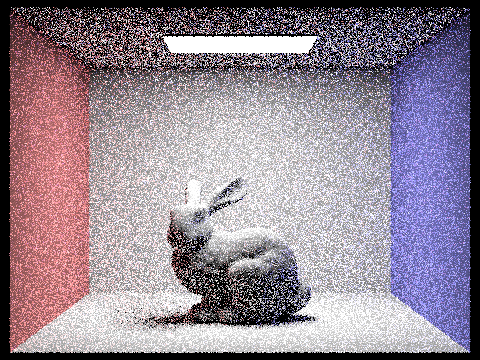

Overview
In this homework, we implemented and learned key aspects of rendering pipelines, including ray generation, ray intersection, BVH construction, various lighting techniques such as direct and indirect illumination, and adaptive sampling. By implementing algorithms like Moller Trumbore for triangle intersection and exploring sampling methods like uniform hemisphere and light importance sampling, we gained insights into rendering efficiency. Moreover, implementing adaptive sampling helped us learn about optimizing rendering performance. Additionally, We implemented a different BVH splitting method which can be easily parallelized and transplanted to GPU.
Part 1: Ray Generation and Scene Intersection (20 Points)
Walk through the ray generation and primitive intersection parts of the rendering pipeline.
Ray Generation:
Ray generation occurs at the start of the rendering process for each pixel in the image. First we want to
transform the image coordinate (x,y) into camera space.
This was done by we can mapping each (x,y) to camera space as shown:
where vFox and hFox are turned from degrees to radians - we'll name these new points (cameraX, cameraY). In this situation, the camera is located at position (0,0,0) and looks down the -Z axis. To take this into account, the center of the sensor will be at (0,0,-1) and so (cameraX, cameraY) will be 3D vector (cameraX, cameraY, -1). Then this vector is normalized before being multiplied by matrix c2w and then we set the ray's origin to pos.
Primitive Intersection: Now that the rays are generated, we trace through the scene to determine if they intersect any primitives or light source. We take ns_aa random rays from a pixel and compute the average color average ns_aa samples. Then we update that (x,y) pixel with the resulting average color.
Explain the triangle intersection algorithm you implemented in your own words.
The Triangle intersection was implemented using the Moller Trumbore Algorithm:
Using p1, p2, and p3 to represent the vertices of the triangle, we compute vector3D e1 and e2
representing two
edges of the triangle. Next we compute vectors s, s1, and s2 which are used in the Moller-Trumble algorithm
to determine if the ray intersects the triangle. To see if this intersection is within the
triangle, we compute the barycentric coordinates b1, b2, and b3 and test if intersection occurs within the
valid range of the ray (t > r.min_t and t < r.max_t) and that the barycentric coordinates are all
non-negative.
If these are all true, then we update the intersection struct accordingly -calculating the surface normal as
the dot-product of the barycentric coordinates and vertex normals of the triangle, updating time
of intersection, primitive hit, and bsdf.
The Sphere intersection was implemented by using using the quadratic formula and solving for the
roots of the polynomial:
The polynomial is in the form: at^2 + bt + c = 0, so we define "a" as: d * d where d is the direction of the
ray. We define "b" as
2(o - c) * d where o is the origin of the ray and c is the origin of the sphere. And we define "c" as (o -
c) * (o - c) - R^2 where R is the
radius of the circle. Note that the symbol * represents dot product since we are working with vectors. After
the polynomial is defined, we solve for t.
If there is an intersection, choose the closest t between min_t and max_t and update the Intersection struct
with the new t, bsdf, primitive just like the triangle intersection.
The surface normal will be computed differently, however, it is calculated by the normalized vector pointing
from the sphere center to the intersection point instead.
Show images with normal shading for a few small .dae files.
|
|

|

|

|
Part 2: Bounding Volume Hierarchy (20 Points)
Walk through your BVH construction algorithm. Explain the heuristic you chose for picking the splitting point.
For each node within the BVH tree, we check if their are more than max_leaf_size primitives in the node.
- If true, we need to split the node to a left and right child node. The heuristic we choose was to find the average centroid of all of the primitives alone the bounding box's longest axis. The average was computed by using a forloop to iterate through the primitives, adding up each of their centroids in a variable then dividiing that number by the total amount of primitives in the node - this is the splitting point. Next, if a primitive's centroid was less than the splitting point, it would be sent to the left child node. Moreover, if a primitive's centroid was greater than or equal to the splitting point, it would be sent to the right child node. This was implemented by using the standard library partition function. Recursively split the child nodes until it's size is less than max_leaf_size.
- One a node's size is less than max_leaf_size, we know it is a leaf node, thus we do not need to split anymore. Instead, we will return the leaf node with the primitive list.
Show images with normal shading for a few large .dae files that you can only render with BVH acceleration.
|
|
|
|
|
|
Compare rendering times on a few scenes with moderately complex geometries with and without BVH acceleration. Present your results in a one-paragraph analysis.
Rendering with BVH acceleration greatly improves rendering time because it reduces the amount of intersection tests needed between the ray and scene primitives. For example, rendering cow.dae with BVH acceleration takes my local machine an average of around .31 seconds to complete. Rending the same cow.dae but WITHOUT BVH acceleration takes around 41 seconds. From this instance BVH acceleration improved rendering speed by 132x. We find similar results when rendering another images such as dragon.dae. Rendering with BVH took around .4 seconds to complete and rendering without BVH took 20 minutes to finish. After some testing, it seems that rendering with BVH usually takes under 1 second to render any file size, however rendering a very large file without BVH could take as long even an hour (wall-e).
Part 3: Direct Illumination (20 Points)
Walk through both implementations of the direct lighting function.
One of the implementations is the uniform hemisphere sampling method. This method samples the
incoming
light direction from a hemisphere uniformly and see whether the ray intersects with any light. To be
specific,
we first sample a random direction uniformly on a hemisphere (since we only care about diffuse materials,
this
can be seen as sample according to BSDF, however we can use other sampling methods like cosine-weighted
sampling)
and the corresponding pdf is 1/2pi. Then we cast a ray to determine whether we hit a light source. If we do,
we compute the radiance from the light source and multiply it with the BSDF, cosine term and the inverse of
the
pdf to get the contribution of the sample.
The other implementation is the light importance sampling method. This method samples the light
source directly
and forms a shadow ray to see if the light is visible from the intersection point. The main difference is
that
this method samples a point on the light source directly and the corresponding pdf is the inverse of the
area of the light source.
However we need to convert the pdf from area measure to solid angle measure by multiplying the squared
distance between the intersection point and the light source.
Then we cast a shadow ray to see if the light is visible from the intersection point. If it is, we compute
the radiance from the light source and multiply it with the BSDF, cosine term and the inverse of the pdf to
get the contribution of the sample.
For delta distributed light sources, we just sum them up using one sample since all the samples have the same
contribution. For other light sources we average the contribution of all the samples to get the contribution.
Finally we add up the two kinds of contributions to get the final radiance.
Show some images rendered with both implementations of the direct lighting function.
| Uniform Hemisphere Sampling | Light Sampling |
|---|---|
|
|
|
|
|
|
Focus on one particular scene with at least one area light and compare the noise levels in soft shadows when rendering with 1, 4, 16, and 64 light rays (the -l flag) and with 1 sample per pixel (the -s flag) using light sampling, not uniform hemisphere sampling.
|
|
|
|
|
|
As is shown in the images, the noise level decreases as the number of light rays increases. In the image rendered with 1 light ray, the noise is very high, and in the image rendered with 64 light rays, the noise is very low.
Compare the results between uniform hemisphere sampling and lighting sampling in a one-paragraph analysis.
The uniform hemisphere sampling method samples the incoming light direction from a hemisphere uniformly and see whether the ray intersects with any light. This method is simple and easy to implement, but it has a disadvantage that it may take a long time to converge, because not in all directions can the ray hit a light so many samples have zero contribution, leading to a high variance. The light importance sampling method samples the light source directly and forms a shadow ray to see if the light is visible from the intersection point. This method is more efficient and can converge faster, it's actually an integration over the areas of the lights.
Part 4: Global Illumination (20 Points)
Walk through your implementation of the indirect lighting function.
For indirect lighting, we implemented a recursive function that computes the radiance at a point by sampling BSDF to get a new ray direction and then get the radiance from the new ray direction. And on each bounce, we compute the direct illumination from the light sources, which is called "next event estimation". We also implemented Russian Roulette to terminate the path randomly so that we can terminate the rendering process at any depth without worrying about infinite recursion.
Show some images rendered with global (direct and indirect) illumination. Use 1024 samples per pixel.
|
|
|
Pick one scene and compare rendered views first with only direct illumination, then only indirect illumination. Use 1024 samples per pixel. (You will have to edit PathTracer::at_least_one_bounce_radiance(...) in your code to generate these views.)
|
|
|
As is shown in the images, the ceiling in the direct illumination image is very dark because it cannot be directly illuminated by the light source. In the indirect illumination image, the ceiling is much brighter because it receives light from the other surfaces in the scene. In the direct illumination image, only the space where the light directly hits is very bright, while in the indirect illumination image, although the brightness is lower, the light is more evenly distributed.
For CBbunny.dae, compare rendered views with max_ray_depth set to 0, 1, 2, 3, and 100 (the -m flag). Use 1024 samples per pixel.
|
|
|
|
|
|
|
|
The scene becomes brighter as the max_ray_depth increases, because the light can bounce more times and illuminate more surfaces. However, the images with max_ray_depth=3 and max_ray_depth=100 are almost the same, because the light has already bounced many times and the indirect illumination caused by the light bouncing more times is not very significant.
Pick one scene and compare rendered views with various sample-per-pixel rates, including at least 1, 2, 4, 8, 16, 64, and 1024. Use 4 light rays.
|

|
|
|
|
|
|
|
|
|
|
In the images, the noise level decreases as the number of samples per pixel increases. In the image rendered with 1 sample per pixel, the noise is very high, and in the image rendered with 1024 samples per pixel, the noise is very low. The brightness of the images are not very different, because the brightness is mainly determined by the scene and the max_ray_depth, not the number of samples per pixel.
Part 5: Adaptive Sampling (20 Points)
Explain adaptive sampling. Walk through your implementation of the adaptive sampling.
Adaptive sampling is a rendering algorithm that dynamically changes the number of sampling done in an area based on the sample variance as opposed to uniformly sampling
the entire area. This can reduce the computational cost of higher quality images and reduce rendering time.
For different pixels, the rate of convergence of our monte carlo integration can be different. For example,
some pixels may converge quickly with only a few samples, while some pixels may require a large number of
samples to converge. We can judge whether a pixel has converged by computing the variance of the samples
and if the variance is small enough, we can stop sampling for that pixel.
We implemented a simple adaptive
as suggested in the spec. We modified the function PathTracer::raytrace_pixel(), adding two new variables
s1 and s2 defined as the sum of radiance of all samples and the sum of radiance squared of all sample respectively. We also modified
the for-loop, for every sample updating s1 and s2 accordingly and checking if we can terminate early every samplesPerBatch samples if the pixel's convergence is less than or equal to maxTolerance * mu. In places where the algorithm converges quickly, we can see that the numbers of
samples are reduced greatly, speeding up the rendering process.
Pick two scenes and render them with at least 2048 samples per pixel. Show a good sampling rate image with clearly visible differences in sampling rate over various regions and pixels. Include both your sample rate image, which shows your how your adaptive sampling changes depending on which part of the image you are rendering, and your noise-free rendered result. Use 1 sample per light and at least 5 for max ray depth.
|
|
|
|
|
|
Part 6: Extra
We implemented a BVH constructing method similar to Thinking Parallel, Part III: Tree Construction on the GPU, which is an efficient parallel BVH construction algorithm that can be transplanted easily to GPU. The algorithm is based on the idea of building the BVH tree in a bottom-up manner, where the leaf nodes are the primitives. To construct the BVH parallelly, we first compute the morton codes for all the centroids of the bounding boxes and sort the primitives by morton codes. Then we compute the two children and the splitting point for each intern`al node based on the first bit that differs in the morton codes. Finally, we compute the bounding boxes for the internal nodes in a bottom-up manner. Besides, we have also attempted to bring the whole renderer to the GPU following the "wavefront path tracing method", however the workload of this part is far beyond our expectation since it requires a thorough refactor of the whole rendering framework. We failed to finish it before submission due to the time limit and will continue to work on this part after the submission.